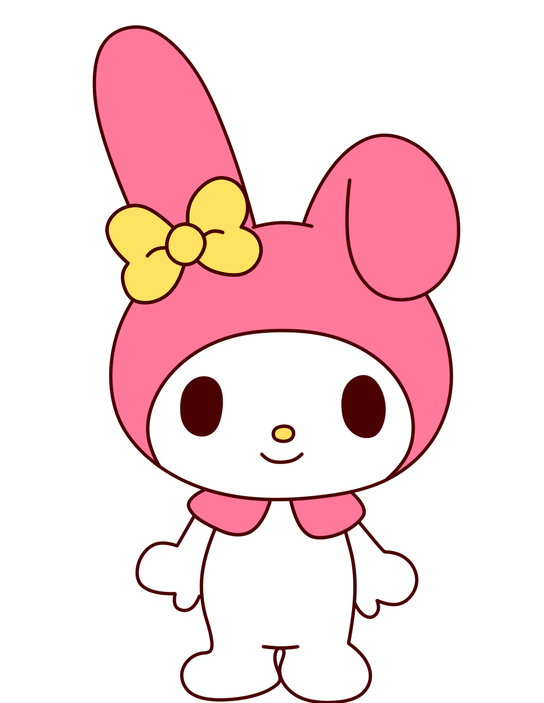
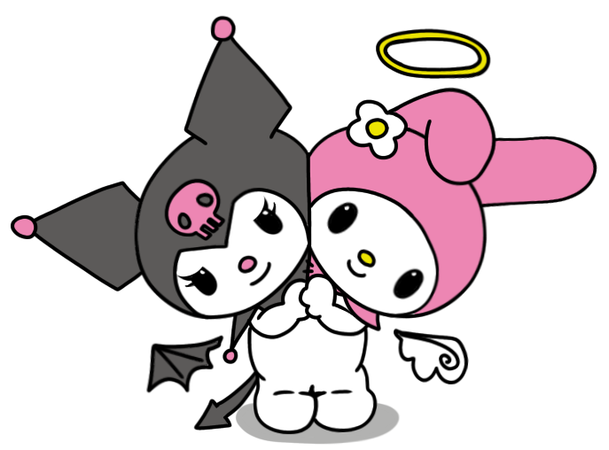

Perdón bonita❤️🩹
Sé que esto que te estoy escribiendo es raro y, no sé, es muy extraño también por así decirlo. Sin embargo, quiero hacerlo porque quiero.
Mira, me pareces una persona súper linda, bonita, agradable, tierna y de verdad muy cautivadora porque realmente eres bella y hermosa.
Sé que no soy muy buena persona y reconozco que en muchas ocasiones soy indiferente y a veces es como que "ahh", desinterés e indiferencia. Te pido perdón por ello y te prometo que trataré de cambiar para siempre darte lo mejor de mí
A lo que quiero llegar es que sí o sí quiero expresarme contigo al menos por medio de esta carta porque haciendo cosas a mano soy malísimo y también quiero que me conozcas más con estas pequeñas cosas.
Mira, eres una mujer hermosa aunque te digas a ti misma que no. No sé cuantas veces te lo habré dicho, y no me cansaré de decírtelo. Todo de ti es lindo, tus ojos son divinos y realmente me atrapan, y cuando los veo, hay cosas que no puedo explicar. Tu cabello es igualmente hermoso, me encanta, tiene un brillo que resplandece con tan solo verlo. Me quedo corto en palabras para decirte lo bello que es. Tu estatura, tu piel, tu rostro, todo de ti es simplemente tan hermoso como un atardecer. Para mí, tu brillas como una perla, simplemente no alcanzo a expresar cuánta belleza veo en ti.
Te has vuelto una persona muy importante y especial para mí. Te quiero con todo mi ser, te adoro. Llega un fin de semana y lo que quiero es que simplemente ya empiece de nuevo una nueva semana para verte. Y perdón si suena algo intenso...Pero cuando te veo simplemente es, ¿cómo decirlo...?Me vuelvo estúpido, pero no lo digo en esa forma, sino en que realmente cuando te abrazo, te tengo, te siento cerca, suceden muchas cosas dentro de mí que no sé cómo explicarte porque no encuentro las palabras para ello.
Sé que no hemos compartido mucho tiempo. Me acuerdo perfectamente de las palabras que me dijiste aquel día que salimos y está bien. No quiero que esto suene a una carta de declaración, ¿está bien? solo quiero decir lo que siento, que podamos seguir conociéndonos más, aprendiendo uno del otro, que podamos confiar en el otro y siempre estemos para el otro.
Perdón si no soy muy detallista, es que realmente busco darte algo que te agrade, te guste y que tú disfrutes.
Porque en serio, contigo me siento muy bien, contigo tengo momentos muy agradables, o sea, realmente me haces sentir muy bien y me gusta compartir contigo aunque sea pequeños ratitos en el colegio, gracias por estar conmigo

Espero te guste...